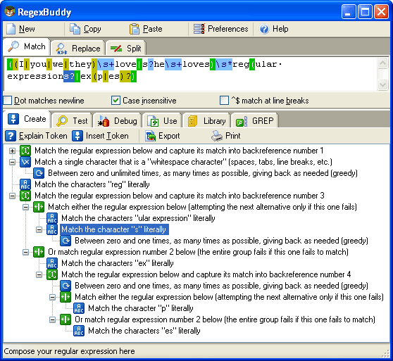

Regular expressions remain a complex beast, even with a detailed regular expression tutorial at your disposal. RegexBuddy is a specialized tool that makes working with regular expressions much easier.
RegexBuddy lays out any regular expression in an easy-to-grasp tree of regex building blocks. RegexBuddy updates the tree as you edit the regular expression. Much easier is to work with the regex tree directly. Delete and move regex building blocks, and add new ones by selecting from clear descriptions. You can get a good overview of complex regular expressions by collapsing grouping and alternation blocks in the tree.
RegexBuddy's chief designer is Jan Goyvaerts, who also wrote the regex tutorial on this website. The tutorial is included with RegexBuddy, in two formats. The tutorial in RegexBuddy's help file is always only a click away. Just click the Explain Token button to open the right page in the tutorial. The full tutorial is also included in RegexBuddy's PDF manual. You can easily print this manual if you prefer to read on paper instead of on the screen.
(continued below screen shot)

Even though RegexBuddy's regex tree makes it very clear how a regular expression works, the only way to be 100% sure whether a particular regex pattern does what you want is to test it. RegexBuddy provides a safe environment where you can interactively test and debug your regular expressions on sample text and files. RegexBuddy can highlight regex matches and capturing groups. The highlighting is automatically updated as you edit the regex, so you can instantly see the effects of your changes.
For detailed tests, RegexBuddy provides compete details about matches and capturing groups. You can easily test regex search-and-replace and split actions.
The key advantages of testing regular expressions with RegexBuddy are safety and speed. RegexBuddy cannot modify valuable files and actual data. You only see the effect would be. Opening a sample file or copying and pasting sample data to test a regular expression is much quicker than transferring the regex to the tool or source code you want to use it with, and creating your own test environment.
Many popular programming languages support regular expressions. If you are a programmer, using regular expressions enables you to do in a single or a handful lines of code what would otherwise require dozens or hundreds. When you use RegexBuddy, testing a single regular expression is far easier than debugging handwritten code that does the same. If others need to maintain your code later, they will benefit from RegexBuddy's regex analysis to quickly understand your code. You can insert RegexBuddy's regex tree as a comment in your source code.
RegexBuddy makes developing software with regexes even easier by providing you with auto-generated code snippets. Instead of remembering the correct classes and function calls, and how to represent a regex in source code, just tell RegexBuddy which language you are using and what you want to do. Copy and paste your custom-generated code snippet into your code editor, and run.
Using regular expressions not only saves you time. Unless you spend a lot of time hand-optimizing your own text searching and processing code, using regular expressions will speed up your software. This is certainly true if your language has a built-in regex engine that works at a lower level than your own code can.
Use RegexBuddy to collect your own library of handy regular expressions. You can save a regex with only one click. If you type in a brief description with each regex you store, RegexBuddy's regex lookup enables you to quickly find a previously saved regex that does what you want.
RegexBuddy also comes with a standard library of common regular expressions that you can use in a wide variety of situations.
RegexBuddy works under Windows 95, 98, ME, NT4, 2000 and XP, as well as most versions Linux for Intel Pentium and AMD Athlon PCs. For more information on RegexBuddy, please visit www.regexbuddy.com. You can get your own copy of RegexBuddy for only US$ 29.95. You will quickly earn the money you pay for RegexBuddy back many times over in the time and frustration you will save. RegexBuddy makes working with regular expressions much easier, quicker and efficient.
Page URL: http://www.Regular-Expressions.info/regexbuddy.html
Last Updated: 22 September 2004
Copyright © 2003-2005 Jan Goyvaerts. All rights reserved.
| Regex Tools |
| grep |
| PowerGREP |
| RegexBuddy |
| General Applications |
| EditPad Pro |
| Languages & Libraries |
| Delphi |
| Java |
| JavaScript |
| .NET |
| PCRE |
| Perl |
| PHP |
| Python |
| Ruby |
| More Information |
| Introduction |
| Quick Start |
| Tutorial |
| Tools and Languages |
| Examples |
| Books |
| Reference |
| About This Site |
| Download and Print |
| PowerGREP 3 |
| Use regular expressions to search through large numbers of text and binary files, such as source code, correspondence, server or system logs, reference texts, archives, etc. Quickly find the files you are looking for, or extract the information you need. Look through just a handful of files, or thousands of files and folders. |
| Perform comprehensive text and binary replacement operations for easy maintenance of web sites, source code, reports, etc. Preview replacements before modifying files, and stay safe with flexible backup and undo options. |
| Work with plain text files, Unicode files, binary files, files stored in zip archives, and even MS Word documents, Excel spreadsheets and PDF files. Runs on Windows 98, ME, NT4, 2000 & XP. |
| More information |
| Download PowerGREP now |